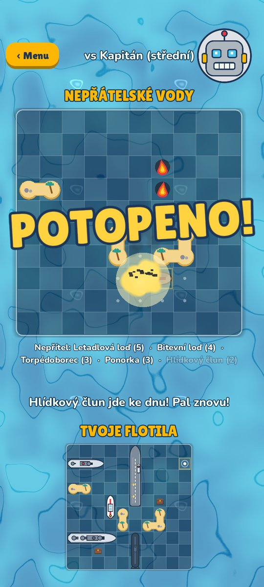
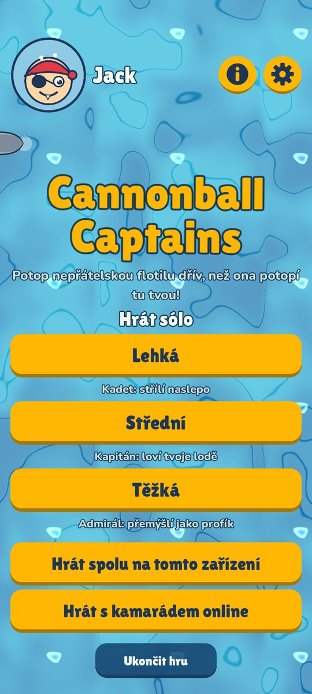
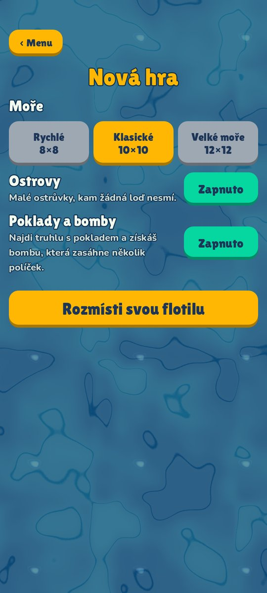
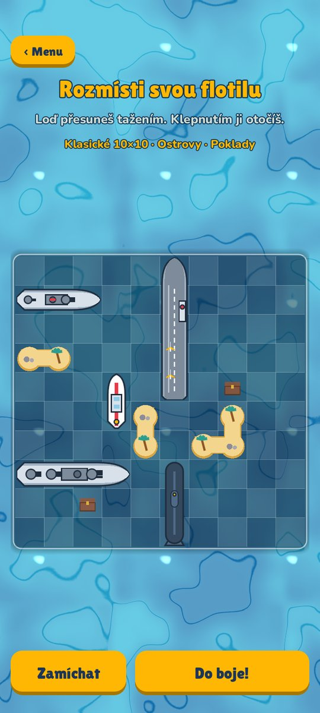
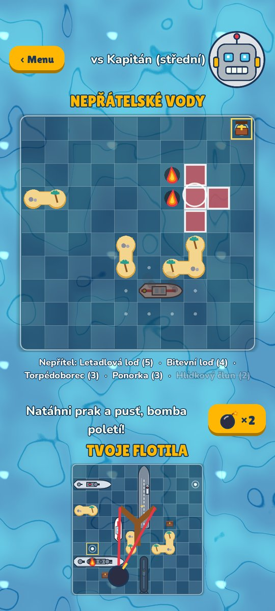
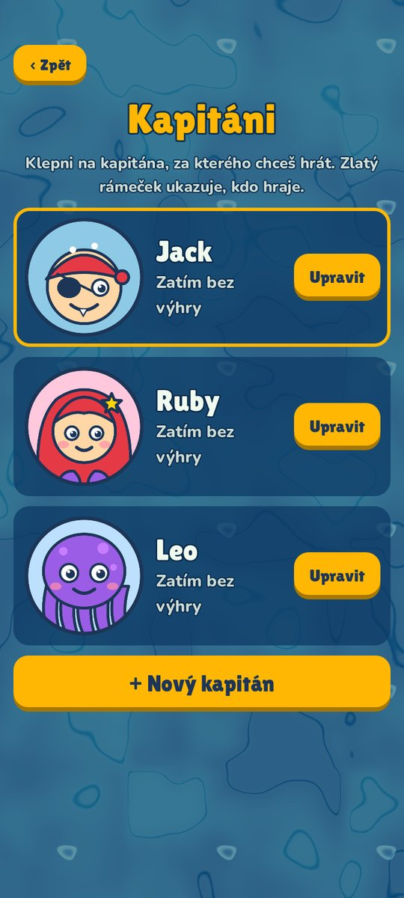
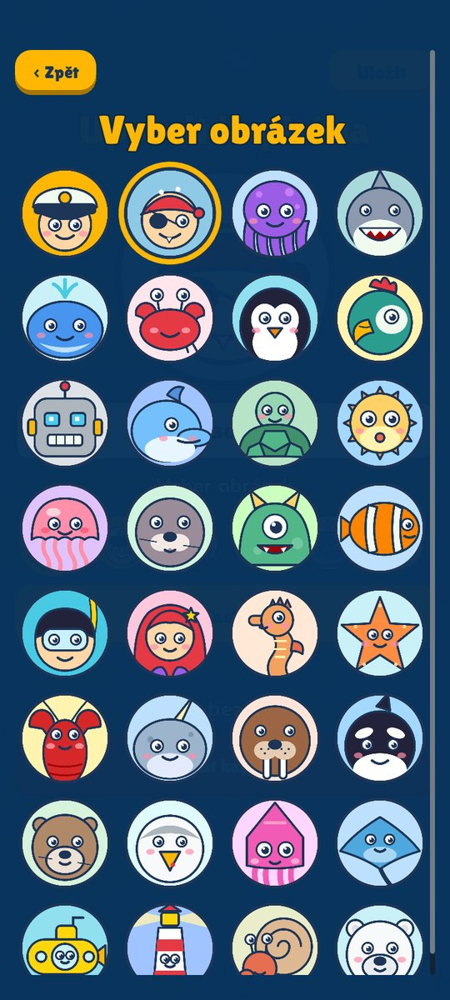

Cannonball Captains
Schovej svou flotilu, pal dělovými koulemi a potop nepřátelské lodě dřív, než potopí ty tvoje! Kreslená námořní bitva pro celou rodinu.
Zdarma · Bez reklam · Bez nákupů ve hře English · Čeština · Deutsch · Español · Français · Italiano



Ahoj, kapitáne!

Hraj sólo
Utkej se s počítačem: snadným Kadetem, mazaným Kapitánem nebo tvrdým Admirálem, který přemýšlí jako profík.

Hraj s kamarádem
Každý na svém telefonu nebo tabletu, kdekoli s internetem. Pošlete si čtyřpísmenný kód a do boje!

Hrajte spolu
Jen jeden telefon nebo tablet? Dva kapitáni se na něm střídají a po každém tahu si ho předají. Nekoukat!
Poklady a bomby
Najdi truhlu s pokladem ukrytou v nepřátelském moři a získáš bombu. Natáhni prak a rozstřílej celou skupinu políček!

Tři moře a ostrovy
Rychlé moře 8×8, klasické 10×10 nebo velké moře 12×12 se sedmi loděmi. Přidej ostrovy a hra bude pokaždé jiná.

Vyber si kapitána
Vybírej z 32 kreslených postaviček, od pirátů a mořských panen po narvaly a majáky. Počítej svoje výhry!

Šplouch a bum
Létající dělové koule, velké šplouchance, ohnivé zásahy a potápějící se lodě, a k tomu zvuky.

Férová hra
Na konci online hry každé zařízení zkontroluje flotilu druhého kapitána. Žádné podvádění!

Obrázky ze hry






Stáhnout
Pro telefony a tablety s Androidem (Android 7 nebo novější), včetně tabletů Amazon Fire. Brzy i na Google Play.
Nemáš Android? Hraj v prohlížeči
Stejná hra běží přímo ve webovém prohlížeči na počítači, tabletu i telefonu, nic se neinstaluje. Online hraje i s aplikací pro Android. Při první návštěvě se stáhne asi 12 MB.
Jak nainstalovat
- Stáhni soubor do telefonu nebo tabletu s Androidem. Pokud se prohlížeč zeptá, jestli ho ponechat, zvol Přesto stáhnout.
- Otevři ho a klepni na Instalovat. Pokud Android hlásí, že z tohoto zdroje nemůže instalovat aplikace, klepni na Nastavení, zapni Povolit z tohoto zdroje, vrať se a klepni na Instalovat.
- Google Play Protect ji může označit za „nerozpoznanou“. To je u aplikací mimo Obchod Play normální. Zvol Zkontrolovat aplikaci nebo Další podrobnosti → Přesto nainstalovat.
- Otevři Cannonball Captains, vytvoř si kapitána a vypluj!
Tablety Amazon Fire: instalaci povol v Nastavení → Zabezpečení a soukromí → Aplikace z neznámých zdrojů pro aplikaci, kterou jsi soubor stáhl(a). Aktualizace: nový soubor nainstaluj přes starý. Kapitáni i výhry zůstanou.
Jak hrát
Rozmísti flotilu. Každý kapitán má 5 lodí: letadlovou loď (5 políček), bitevní loď (4), torpédoborec (3), ponorku (3) a hlídkový člun (2). Loď přesuneš tažením a otočíš klepnutím. Lodě se nesmí dotýkat, ani rohem.
Střílejte na střídačku. Klepni na políčko v nepřátelských vodách a vystřel dělovou kouli. Šplouchnutí znamená vedle a tah přechází na soupeře. Plameny znamenají zásah a střílíš znovu!
Potop je všechny. Loď se potopí, když zasáhneš všechna její políčka. Vyhrává kapitán, který jako první potopí celou nepřátelskou flotilu.
Poklady a bomby. Se zapnutými poklady jsou v moři ukryté truhly. Střel na jednu a získáš bombu, pak natáhni prak a shoď ji na celou skupinu políček. Po bombě je na tahu soupeř.